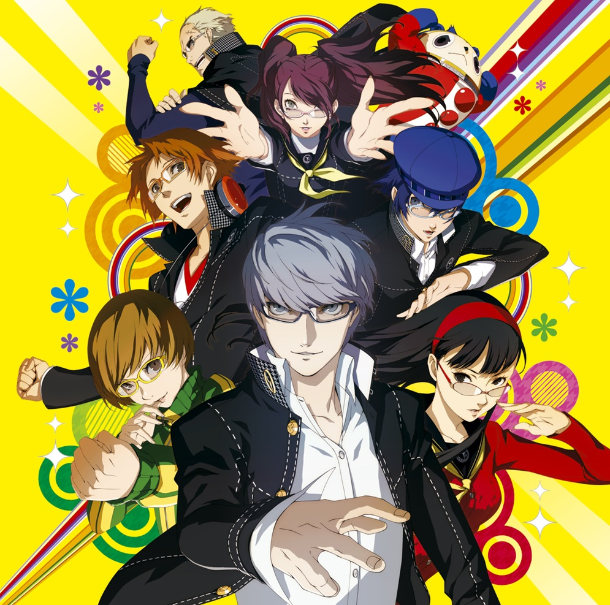

Welcome to personal blog of Yaroslav Petrushko.
Here you can find articles about IT, programming, music, and other fragments of my daily chaos.
I write about what inspires me — from algorithms and game design to soundtracks that live rent-free in my head.
If say shortly about me — 20 y.o., Computer Science student from Ukraine 💙💛.
My main hobbies are gaming, IT, and listening to music.
Sometimes I try to combine all of them into one creative project.
Favorite films:
Drive (2011) — 8/10. Literally me.
Inception (2010) — 8/10. Our dreams contain more than we can perceive.
Interstellar (2014) — 9/10. Best sci-fi I’ve watched.
Blade Runner 2049 (2017) — 9/10. Visually hypnotic perfection.
Matrix (1999) — 8/10. Classic cyberpunk philosophy.
My Favorite Game
Persona 4 Golden (2011)
Genre: JRPG, Social simulation. Developer: ATLUS, P-Studio.
Platform: PlayStation Vita, PC, Nintendo Switch, PS4, PS5, XONE, Xbox Series X/S.
Why I love it: It perfectly blends engaging turn-based combat with deep social simulation elements,
allowing players to build relationships and explore a richly detailed world.
The game's unique "Social Link" system adds emotional depth to the narrative,
making each character's story feel personal and impactful.
The art style is vibrant and memorable, complemented by a fantastic soundtrack that enhances the overall experience.
Persona 4 Golden offers a compelling mix of mystery, friendship, and self-discovery, making it a standout title in the JRPG genre.
Bonds of friendship are the strongest.
